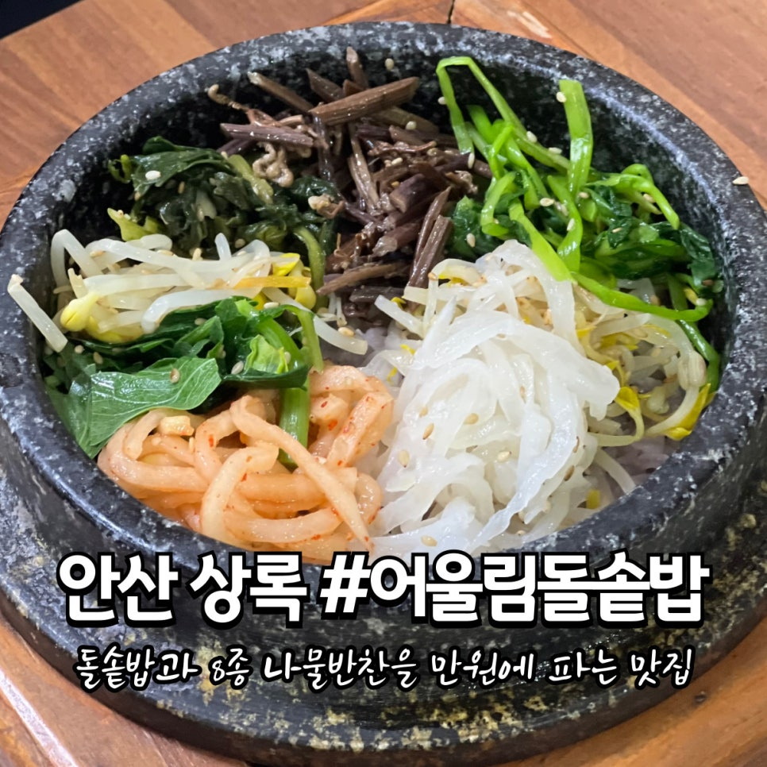
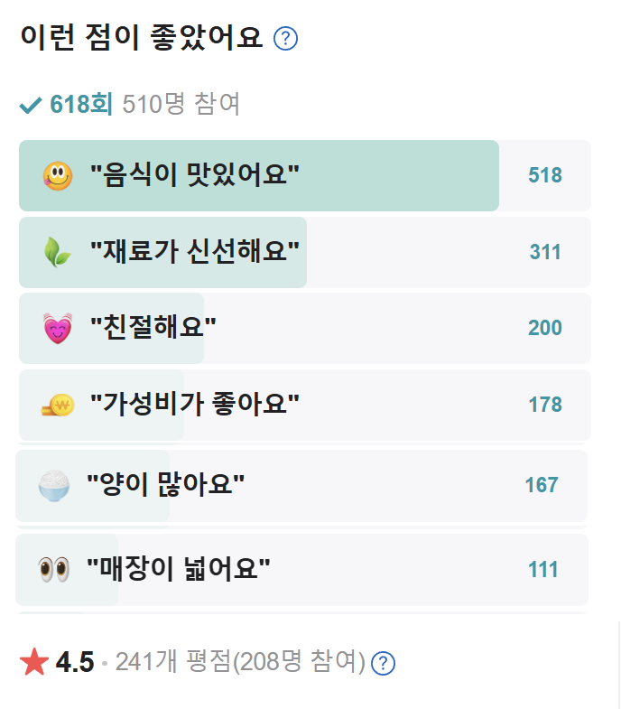
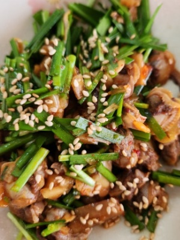
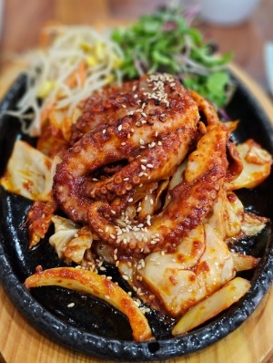

** 돌솥 꼬막 비빔밥
꼬막살이 통통해 밥 한수저에 올려 맛보시면 매콤한 꼬막무침의 식감이 최고예요!!좀 드신 다음 고추장과 참기름을 넣어 비벼 드시면 입안에서 제철 나물들과 함께 맛의 향연이 벌어진답니다.
\13,000
⭐⭐⭐⭐⭐



** 돌솥 꼬막 비빔밥
꼬막살이 통통해 밥 한수저에 올려 맛보시면 매콤한 꼬막무침의 식감이 최고예요!!
** 돌솥 문어볶음 정식
가위나 집게를 이용해 문어를 먹기 좋게 잘라 드셔보시면